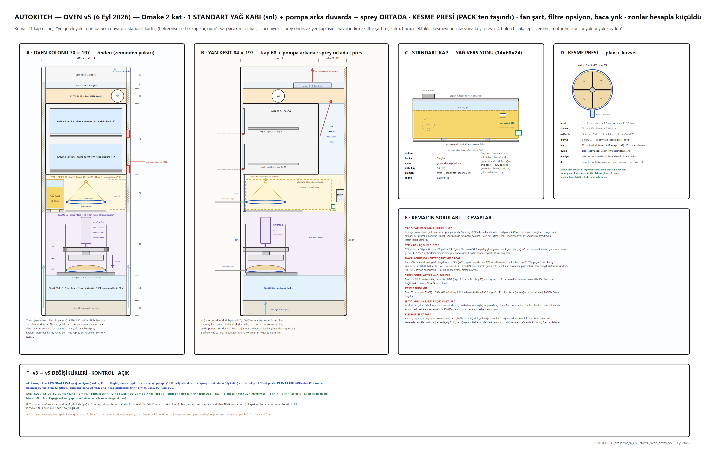

4 · FIRIN — TP10 kesitli kızılötesi konveyör fırın1500 × 730 × 517 · 79 mm öne · v57
28 EYL · MONTAJ v63: ÖN DÜZLEM +79 · TEMİZ KUTU İSTASYONLAR. Bütün istasyonların ön yüzü fırının ön yüzüyle aynı düzlemde (z +79); arka yüz −830 yerinde, derinlik 909. Her istasyon kendi başına kapalı bir kutu: kapaklar ön düzlemde, aralarında 3 mm derz. Soğuk kapaklar 40 mm (304 1,5 + PU 37,5 + 304 1,0), kuru istasyon kapakları 20 mm tava panel (304 fırçalı 1,5). Modelin altındaki Ön kapaklar çubuğu: tam sağ = metal kapaklar, sola çektikçe saydamlaşır, tam sol = görünmez (içerisi). Fırın gövdesi değişmedi (ön yüzü ortak düzlem). Fırın üstü artık kapalı kabin: yan + üst + tek parça arka sac, iki kanat alttan menteşeli düşer kapak (açıkken dolum rafı), davlumbaz sac kutusu yan saclara asılı, kompresör tavada.
Sveba Dahlen TP10'un kesiti aynen (730 derin, 517 yüksek, 381 bant, 85 ağız, kızılötesi üst/alt, 400 °C), gövdesi 960 → 1500 (F modülünün tamamı): bant hiçbir yerde gövde dışına çıkmıyor, uç ruloları uç duvarlarının içinde, ısıtılan 1316 = aynı anda 4 ürün. Ürün TOPPING'den giriş bandına, fırından ölü plakayla K bandına geçer. Üstünde havalı raf (pizza kutusu yedeği + kompresör). Altında taban dolabı yok (v57): fırın çekmeceli dolabın düz üstüne (788) oturur. Kemal 26 Eyl: “bizim yaptığımızda ölçüler kafadan atmaydı; gerçek fırının önünü arkasını istediğimiz ölçüye uzat, bant boş olmasın.” Modelin altındaki çubuktan kesit alabilir (X/Y/Z) ve iki noktaya tıklayıp ölçü çıkarabilirsin.
sürükle: döndür · üstüne gel: birim · çift tıkla: aç · alttan kesit + ölçü
27 EYLÜL 2026 · ALÇAK HAT (montaj v57): FIRIN ÇEKMECELİ DOLABIN ÜSTÜNDE
Bütün hat 168 mm aşağı (makine üstü 1862). Fırın gövdesi 788–1305: altı tek parça çekmeceli dolabın düz üstü, A ve C'nin altıyla aynı çizgi. Ürün hep aşağı iner: disk 1000 → fırın bandı 998 → ölü plaka 997,5 → K bandı 996. Fırın üstü raf 1348: kutu yedeği 320 + kompresör, arkada davlumbaz 1315–1862. F taban dolabı kalktı; fırının altında dolabın K5 · K6 sütunları ve robot çöpü şeridi var, araya PU 60 ısı kalkanı ve fırın yükünü taşıyan 304 çerçeve girdi. Kesit ve geometri v56 ile aynı (firin_tp10_cad_v7 = v6 − 168, sapma ≤ 1,2e-11 mm).
1 · Ne yapar · ürün yolu
Giriş (v51 · İTİCİ düz): tabla aktarma konumunda (disk merkezi 2337, kenarı 2507, disk üstü 1000). Aktarma iticisi çubuğunu indirir ve pideyi diskten x boyunca düz 170 mm iter (2337 → 2507, eksen −170). Ön 89 mm'si fırın bandında (2568+), ortası giriş bandında (PTFE 320, NEMA23 + GT2, üstü 998); bantlar ürünü içeri alır. Destek plakası yok (v51). Çubuk kalkar, araba eve döner, tabla açıcının altına gider.
Fırın: giriş duvarı 60 (rulo içinde) → ısıtılan oda 2624–3940 = 1316: kızılötesi üst + alt, 2'şer bölge, 400 °C; 3,5 dk pişme (kural 3.1) → adım 310'da 4 ürün; bant 381 × 1428 uçtan uca (2568–3996), üstü 998 (önce 1166). Çıkış duvarı 60.
Çıkış: ölü plaka 3997–4018 (997,5) → K bandı (996, 4020'den). Ürün −170'te düz gelir (K giriş çiti v51'de kalktı); kesme merkezi 4300.
Üstü (1305–1862): HAVALANDIRMALI raf: 39 mm Ø16 boru takozlar (10 adet, aralık 360) üstünde 4 mm 304 raf (üstü 1348), altında fırın üstünden 10 mm'de (1315) 0,8 mm ışınım kalkanı, yanları açık — JUN-AIR OF302-15B'nin ortam sınırı 0–40 °C (föy). Rafta SOLDA pizza kutusu yedeğinin TAMAMI: 320 kutu (1348–1860, tek yer; E şarjörü 462 ile 782 ≈ 2,8 gün; şarjörün kullanılabilir kısmı ≈ 432 → 752, karar Kemal'de) · ortada 262 BOŞ · SAĞDA kompresör (1348–1858, hat 1862'ye 4 mm; kural 4'ün tek istisnası). Arka yarı egzoz davlumbazı 1315–1862 (fan + yağ/karbon filtre). Raf üstü sıcaklığı pilotta ölçülecek; fırın üst yüzey sıcaklığı üreticiden.
Altı (123–788) · v57: F taban dolabı KALKTI. Fırın çekmeceli dolabın düz üstüne oturur; altında dolabın K5 (3 pide + tatlı 12 kap) ve K6 (3 içecek, 144) sütunları ve robot çöpü şeridi (15 L kova, 130 × 130 klape). Aradaki PU 60 ısı kalkanı (2517–3793 × 728–788) ve 304 taşıyıcı çerçeve (2 kiriş + 3 çapraz + 6 ayaklı dikme) fırın yükünü zemine indirir. Eski dolaptakiler: bulaşık → K altı (arkasında deterjan + parlatıcı) · robot kontrol + ana pano + UPS → QR dolabı · temizlik → tezgâh · içecek yedeği → E altı (6 koli). 1060 kuralının F istisnası (956) da kalktı: A, C ve fırın altı aynı düz çizgide.
1c · Fırın 79 mm öne · ürün hattı hizalandı (v51)
Karar (Kemal, 27 Eyl 2026): "fırını taşı, hizalanma olsun, doğrusu öyle." TP10 kesitinde tünelin ön duvarı 79 mm; ürün ancak −99'dan başlayabildiği için fırında −249'da gidiyor, TOPPING ve kesme −170'te — ürün fırına 79 mm çapraz giriyor, çıkışta çitle geri geliyordu. Fırın gövdesi, konveyörü, giriş bandı ve çıkış ölü plakası 79 mm öne alındı: tünelin iç yüzü tam ön yüz çizgisinde, duvar ön yüzün önünde çıkıntı (1500 × 517 × 79, y 788–1305 · v57, önce 956–1473; F modülü 909 derin). Ürün hattı mağazadan kesiciye −170 düz, kutuya girişte 36 (bugünkü gibi).
Değişenfirin_tp10_cad_v5 (gövde +79…−651, ürün −170, giriş ağzı −341…−10) · itici_cad_v3 (düz 170 mm, silindir ekseni z −212: iniş borularına 18,5, sensöre 23) · topping_uno_cad_v9 (ön fitil yine tam) · kesme_cad_v2 (ön kapaklar yok, Kemal) · montaj v51SilinenK giriş çiti (F'nin, 20°) · aktarma destek plakası (C_DESTEK) · TOPPING fitil boşluğu · K taban kapısı, PC pencereli üst kapı, kulplar, AZM kilit, ön acil stopKalanraf, ışınım kalkanı, takozlar ve F arka sacı yerinde (gövde üstü hâlâ takozların altında) · taban dolabı 956 (v57'de kalktı) · davlumbaz · K ve E parçalarıDenetimyükleniyor…Açıkçıkıntı 79: üretici 60 mm duvar + 10 mm pay verirse 50'ye iner [V] · v63: bütün hat 909 derin (fırın ön yüzü = ortak ön düzlem, istisna kalktı) · robot kol zarfı kutu, gerçek kol modeli yok (çıkıntıya yatay pay 161 = ray önü z 240 − 79; önce yazılan 181 yanlıştı)
FIRIN_EKSEN v1 (27 Eyl): üstte v50 (ürün fırına 79 çapraz), altta v51 (fırın 79 öne, hat düz). Aynı ölçek.
1b · Aktarma iticisi (itici_cad_v4) · pideyi diskten fırına DÜZ iter
Görevtabla aktarma konumundayken pideyi (Ø280–300, 28 mm) diskten (2337, −170) fırının giriş bandına itmek: x boyunca düz 170 mm (2507, −170), θ = 0. Önce (v49–v50) fırın 79 mm geride olduğu için 24,9° çapraz itiyordu (+170 x / −79 z); v51'de fırın öne alınınca itme düz oldu.EyleyiciSMC MY1B16-250 mekanik bağlantılı kolsuz silindir (föy 8-11-22: gövde 410 × 37 × 27,8, tabla 80 × 30, 0,5 MPa'da 100 N), soğuk odanın tabanına (1109; önce 1277) 37 × 6 lamayla TERS asılı; ekseni çubuk çizgisinin 42 mm gerisinde: kaşar ve sucuk iniş borularının arasından ≥ 4 mm payla geçer, tabla boş sensörüne değmez. Strok 250 (gerekli 240). Hız ayar SMC AS1201F-M5-06 ×2, anahtar D-M9BL ×2, rakor KQ2H06-M5 ×2; portlar gövdede (hareketli hortum yok).Çubuk304 · 3 mm · 170 × 30 + 9 mm taban; alt kenarı diskin 2 mm üstünde (1002), pide kenarını 30 mm boyunca iter. Kızak tablasındaki U braket (60 × 34 × 3) üzerinde pivotlu (pim ISO 8734 4 m6 × 35, igus GSM-0405-25 burç); dik dururken dayama pimine (ISO 8734 3 m6 × 32) yaslanır — itme momenti pime gider.Kaldırma (ek eyleyici yok)iticinin ev konumu pidenin geliş koridorunun (z −320…−20) içinde; tabla gelirken çubuk 1042'nin üstünde olmalı. Araba eve dönerken link'teki POM makara (Ø8, silindir ekseninin 37 mm gerisinde) montaj kirişine kaynaklı braketteki sabit kaldırma pimine (ISO 8734 8 m6 × 70) dayanır, son 17,5 mm'de link 90° döner: çubuk 1054–1058'de yatar (pide + topping üstü 1033). İleri giderken yerçekimiyle iner (pideye 20 mm kala), dayama pimi dik tutar. Kalem silindirli sürüm koridora iniyordu → kaldırıldı; v2'de makara ve pim −w tarafına alındı (v1'de link uzantısı sucuk iniş borusunun altına 1–2 mm giriyor, makara tabla boş sensörüne değiyordu — montaj denetimi yakaladı).Destek plakasıv49–v50'de vardı (çapraz itmede pidenin arkada kalan ~60 mm'sini taşıyordu); v51'de düz itmeyle KALKTI.Zamançubuk iner 0,2 s · itme 0,6 s (0,4 m/s) · bekleme 0,2 s · dönüş 0,5 s + son 17,5 mm 0,25 s (kalkış); tabla parka 1,0 s'de döner (önceden 0,5). Animasyonda AKTARMA adımı bu sırayla.v3 · düz itmefırın 79 öne alınınca itme x boyunca düz: 170 mm (2337 → 2507, eksen −170), θ = 0. Silindir gövdesi ürün hattının 42 mm gerisinde sabit z −212'de: kaşar/sucuk iniş borularına 18,5 mm, tabla boş sensörüne 23 mm, ön düzlemi kesmiyor → TOPPING v9'da ön fitil yine tam. Destek plakası kalktı (pide diskin z aralığında kalır). Kiriş sağ ucu 2489,5 (zarf 2492). Kendi denetimi 36/36.v4 · alçak hatitici_cad_v4 = v3'ün 168 mm aşağı kopyası (x ve z aynı, sapma ≤ 1,2e-11 mm): disk 1000 · çubuk 1002–1032 · kalkık çubuk 1054–1058 · koridor 1042 · tavan 1109 (soğuk oda yalıtımının altı) · pivot 1056 · kendi denetimi 37/37.Denetim (itici_cad_v4 + montaj v57)kendi 37 madde (ev kalkık/inik, son, orta, s 100–160 sucuk borusu altı): ev/son/orta kesişim yok · iniş borularına ve sensöre ≥ 3 mm (gerçek katı mesafesi) · ev konumunda koridorda 1042'nin altında parça yok · zarf (x ≤ 2492, z ≤ −5) · çubuk altı 1002 · itme sonu pide (2507, −170), ön 89 mm fırın bandında · makara kinematiği. Montajda: itici ↔ TOPPING (tabla park + aktarma) + fırın + K gerçek katı kesişimi, pide koridoru ve disk süpürmesi, inik çubuk itme süpürmesi, ürün yolu çapraz: —
İTİCİ v3 teknik resim (27 Eyl · alçak hat): itici_cad_v4, bütün kotlar 168 aşağı (disk 1000, çubuk 1002–1032, tavan 1109) · üst görünüş (itme düz 170, fırın gövdesi +79), yan kesit (strok, kaldırma pimi), ön görünüş, parça listesi. PDF. Önceki: v2 (1168 kotlu) · v1 (çapraz) arşivde.
2 · Özellikler
Kesit (föy)Sveba Dahlen TP10 (990004-002): 730 derin · 517 yüksek · bant 381 · ağız 85 · tünel 406 geniş, ön duvar 79, arkada 239 teknik bölme + dokunmatik ekran · kızılötesi üst/alt ayrı · 400 °C · TP10 9,5 kW / 160 kg / 0,34 m²Boy (özel sipariş)gövde 1500 = ön oda 64 + giriş duvarı 60 + ısıtılan 1316 + çıkış duvarı 60 · uç kutusu yok · bant tahriki (redüktör + motor) ve gergi arkadaki teknik bölmede · güç ≈14 kW, ≈200 kg (VARSAYIM: TP10 boyla ölçekli) · Sveba ya da yerli kızılötesi konveyör üreticisine bu kesitle şartnameKotlar (v57)gövde 788–1305 (çekmeceli dolabın üstünde) · bant üstü 998 · ağız 998–1083 · üst raf 1348 · davlumbaz 1315–1862 · altında dolap 123–788 (K5 · K6 · robot çöpü şeridi) + PU 60 + taşıyıcı çerçeve · önceki (v56): gövde 956–1473, bant 1166, taban dolabı 123–956Ürün eksenihat −170 düz, fırında da −170 (v51: fırın 79 öne, tünel iç yüzü ön yüz çizgisinde) · önceki: fırında −249, girişte çapraz itme, çıkışta K bandında çitKapasitetam yükte 46,3 / 51,7 ürün/sa (1. / 2. saat, 3,5 dk) = özel kutu fırınla aynı; darboğaz robot (%100), fırın %69 · 4 dk'da da 52 (sim) · katalog TP10 (892) 49,3 idi · sim v56 kotlarıyla; alçak hatta yeniden koşulmadı (çekmece kotları robotun alma süresini değiştirir)Ölçü kaynağıfirin_tp10_cad_v7.py (alçak hat: v6'nın 168 mm aşağı kopyası, bant 998; tek kaynak) · itici_cad_v4.py · altındaki dolap store_cad_v6.py · pafta FIRIN_TP10 v6 + ITICI v3 · ana montaj v57 (istasyon kabukları yerine şeffaf yüzeyler, ön açık; fırının kendi kabuğu görünür; yalıtım ve etek gizli)Son kontrol (v57)gerçek katı kesişimi: fırın + uyarlama parçaları × TOPPING (tabla aktarmada dahil) + K + hava + kompresör + F kutuları + kendi arasında + çekmeceli dolap (v57: fırın altı = dolap üstü = 788); ürün yolu Ø280 ve Ø300 zarf 10 mm adımla itmeden K kesme merkezine: — İtici: —
Kemal 26 Eyl gece: "özel sipariş olur, yeter ki gerçek ölçülerde olsun" → TP10 kesiti + 1500 gövde şartnamesi; Sveba ya da yerli kızılötesi üretici. Üreticiden istenecek: gerilim, bant kotu, üst yüzey sıcaklığı, STEP, PLC/Modbus
F2
Tabladan itme + 79 mm kayma
ÇÖZÜLDÜ (v51)
aktarma iticisi: fırın 79 öne alındı, itme düz 170 (v49–v50: çapraz 24,9° + destek plakası)
F3
Fırın üstü raf sıcaklığı
v4 · PİLOT
raf v4: 40 mm açık hava boşluğu + 0,8 mm ışınım kalkanı (kompresör ortam sınırı 40 °C — föy); raf üstü sıcaklığı pilotta ölçülür, fırın üst yüzeyi üreticiden
F4
İstasyon tabanı 1060 → F'de 956
KALKTI (v57)
alçak hat (Kemal 27 Eyl, ALCAK_HAT_RESIM1_v4): A, C ve fırın altı aynı düz çizgide 788, basamak yok · önceki: F istisnası 956 (26 Eyl)
F5
TOPPING'in F'ye taşması (85 mm)
ÇÖZÜLDÜ
TOPPING v24: X motoru sol uca, avara sağa, kelepçeler solda → tekne 2500'de biter; fırında cep yok
F6
Fırın düz tabanla dolabın üstüne oturuyor
ÖNERİ VAR
taşıyıcı çerçeve (2 kiriş + 3 çapraz + 6 ayaklı dikme) yükü taşır: 200 kg + raf 99 kg × 1,5 (VARSAYIM; katalog TP10 160 kg) → kiriş 30 MPa, sehim 0,35 mm · düz taban desteği üreticiden teyit
F7
Fırın altı ısısı → soğuk K5 / K6
AÇIK
PU 60 kalkan (728–788); fırın altı 60 °C ve iletim ≈ 146 W VARSAYIM · 6 evaporatörlü tek Secop'un soğutma yükü hesabı yapılmadı
F8
Robot ↔ fırın çıkıntısının altı
AÇIK
çöp klapesinin üstü 740, çıkıntının altı 788 → 48 mm · K5 üst çekmecesi çıkıntının altında: tutucu yarıçapı ≤ 32 ya da açılı yaklaşım
5 · Sürüm geçmişi
v57 (27 Eyl 2026) · GEÇERLİ · ALÇAK HAT: bütün mekanizma 168 aşağı: fırın gövdesi 788–1305 çekmeceli dolabın düz üstünde (basamak yok), bant 998, raf 1348, davlumbaz 1315–1862 · F taban dolabı KALKTI (yeri dolabın K5, K6 ve robot çöpü şeridi; araya PU 60 + taşıyıcı çerçeve) · bulaşık K altına, robot kontrol + ana pano + UPS QR dolabına, temizlik tezgâha, içecek yedeği E altına · pizza kutusu E şarjörü 462 + fırın üstü 320 = 782 · firin_tp10_cad_v7 · itici_cad_v4 · pafta FIRIN_TP10 v6 + ITICI v3 · montaj v57.
v56 (27 Eyl 2026): içecek yedeği 5 koli fırın üstünden F dolabının pizza gözüne indi (3 + 2 = 120 · 4 gün; Kemal: "koliyi aşağı taşı"); fırın üstünde yalnız kutu yedeği 320 + kompresör.
v54 (27 Eyl 2026): fırın üstü: SOL pizza kutusu 320 · ORTA-SAĞ içecek 4 koli (96) · SAĞ kompresör; dolabın pizza gözünde 5. içecek kolisi (toplam 120 = 4 gün); hava ana hattı yığınların arkasından (z −432). montaj v54.
v53 (27 Eyl 2026): BULAŞIK MAKİNESİ GERÇEK MODEL (bulasik_cad_v1): MEIKO M-iClean US föy ölçüleriyle 16 parça — çift cidarlı gövde 460 × 600 × 700, alttan menteşeli kapak (açık 1050, önde 455), dokunmatik ekran, ışıklı kulp, hazne ağzı 315 (yerden 275), sepet 400 × 400, alt + üst yıkama kolu, mavi M-iClean filtre, 4 ayar ayağı, arkada elektrik / tahliye / su bağlantıları (soldan 40 / 186 / 313). Dolap birimleri ve fırınla gerçek katı denetimi temiz; açık kapak (önde 455, alt kenarı yerden 353) robot rayından serbest; robot gövdesi ve kolu x 2300–3240 arasındayken kapak açılmaz — servis modu kilidi gerekir. montaj v53.
v52 (27 Eyl 2026): PİZZA KUTUSU YEDEĞİ TEK YERDE — fırın üstü SOL, rafta 320 kutu (1516–2028); dolaptaki 505'lik göz boşaldı; şarjör 567 + 320 = 887 = 3,1 gün (Kemal: "sola koy işte"). Raf 3 → 4 mm, takoz 6 → 10 (99 kg; sehim 0,2 mm, 3 mm'lik eski rafta ≈6 mm olurdu). FIRIN KABUĞU GÖRÜNÜR: v51'de çıplak filtresi fırının kendi dış kabuğunu da gizliyordu, 79 mm çıkıntı görünmüyordu — düzeltildi. ŞEFFAF İSTASYON YÜZEYLERİ: her istasyonda sol, sağ, arka, üst, alt (ön yok), aynı kuralla — 1,5 mm, arka hep −830, üst 2030 (B 1060), alt 123; ürün geçiş ağızları gerçek saclardan (TOPPING → fırın, fırın → K, K → E); A ile C arasında iç duvar yok, çünkü TOPPING'in açıcısı ve tabla arabası bu sınırdan 600 mm sola geçiyor. firin_tp10_cad_v6, montaj v52.
v51 (27 Eyl 2026): FIRIN 79 mm ÖNE (firin_tp10_cad_v5: gövde + konveyör + giriş bandı + ölü plaka +79 z, çıkıntı 1500 × 517 × 79, ürün −170), itici_cad_v3 düz 170 (destek plakası yok), topping_uno_cad_v9 fitil tam, kesme_cad_v2 ön kapaksız, K giriş çiti yok; model çıplak (kabuk/yalıtım/etek gizli). 1c
v47 ve öncesi: özel konveyör fırın KUTU (hazne 1400, adım 350) — ölçüler hesapsızdı (Kemal). Paftalar v7–v13.
6 Eyl (arşiv): Omake çift katlı taş fırın + kesme presi + sadeyağ kararı (tepsili 4200'lük hat) — terk edildi.
ARŞİV · 6 Eylül tepsili hattın fırın metinleri (Omake taş fırın, kesme presi, sadeyağ kabı) — geçerli değil
1 · Ne yapar · çalışma senaryosu
Fırın gece KAPALI; açılış −20 dk ÖN ISITMA; servis boyunca BEKLEME 340 °C, 20 dk sipariş yoksa EKO 250 (→340 ≈ 3 dk = pide hazırlık süresi). "Kat hazır" = taş ≥ set −15 °C; 2. kat yalnız pik.
Motorlu kapak açılır, tepsi taşa konur (kulp 6 → 38 ≤ 40), 3–4 dk sabit sıcaklık/süre; kapak açılır, robot alır.
Kesme presi: tepsi zemin plakasına dayanır, bıçak yıldızı (2 × 28, 4 parça) 24 V aktüatörle iner (0,85–1,1 kN), robot yalnız kulpu tutar.
Sadeyağ: tek standart kap (yağ versiyonu, helezonsuz) sol slotta, 12 L = 30 gün; pompa arka duvarda; şamandıra 4 gün kala uyarır; eleman ayda 1 kapanışta değiştirir (dolapta sabaha erir).
2 · Özellikler · karar özeti
FırınOmake FPZ01.E21: 64×60×56, 57 kg, 4,8 kW 400 V, 2 hazne 40×40×10, 400 °C, 2 camlı kapak + ayrı termostatlarKapak motoru24 V lineer aktüatör + 2 switch + akım limiti; SSR + termokupl retrofitZonlar (v5, zeminden)plint 12 / pano 20 / KESME 50 / YAĞ+SPREY 30 (kap 15 | tepsi 34 | boş 15, sıcak dolap 42 °C) / fırın 56 / plenum+fan 12 / filtre 5 / yedek 12 = 197Havalandırmaplint girişi → yan/arka kanal → plenum → fan 140 m³/h → yağ filtresi + aktif karbon → üst ızgara (bacasız); yan 3 cm yalıtım (sol TOPPING +3, sağ PACK karton)Yağ4 ml/pide, 0,4 L/gün; tek kap 12 L = 30 gün, dolu 14,1 kg; 24 V dişli pompa 0,5 L/dk, ısıtmalı hat Ø6, çek valfKapasitetek kavite 12–15/saat, iki kavite 25–30 — günde 100 hedefi ve pik saat için yeterli; 150+/güne çıkarsa 3. kavite ya da konveyör (B planı)Neden kapalı hazneiki ucu açık konveyör tünelinde ısı sürekli kaçar (≈ 1.300–1.800 kWh/ay) — kapalı hazne + gece kapalı ≈ 500–800 kWh/ay; dikey istiflendiği için tek gövdede az yer tutarBıçak yıldızıCancan 1330 sınıfı yerli pizza dilimleme presinin paslanmaz çoklu bıçak yıldızı (4/6/8 dilim, yıkanabilir, yedeği bol); "birebir kesmesine gerek yok, bıçak izi yeter" → kuvvet düşük, 0,5 mm durdurucu tepsi kaplamasını çizmezAltyapı2 kat 4,8 kW — pano 380 V hazırlanır; gece kapalı + eko mod elektrik kaleminde ayda ≈ 2–4 bin TL tasarrufHijyenbıçak kafası tek hamlede çıkar, günlük temizlikte yıkanır
3 · Teknik resimler

OVEN v5 — tek yağ kabı, sprey ortada, kesme presi (6 Eyl 2026)